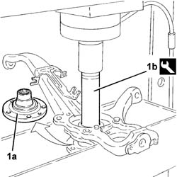
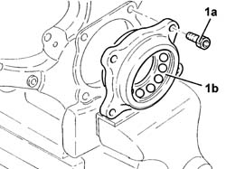
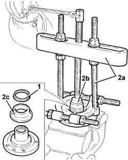
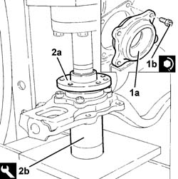

4450C34 BEARING for one front wheel hub, l/h or r/h - replace with pillar removed
- Path
- Procedures > 44 SUSPENSION AND WHEELS > 4450 HUBS AND WHEELS > 4450C FRONT WHEEL HUBS > 4450C34 BEARING for one front wheel hub, l/h or r/h - replace with pillar removed
- Kind
- repair procedure (removal / refitting; the operation number is the code)
- Applies to
- all engines; all production periods
- Interactive page
- https://sloeber94.github.io/elrnDB-lThss/en/#/78998
Applies to: all engines; all production periods
 Removing
Removing
 Refitting
Refitting1. Remove the wheel hub (1a) complete with hub bearing inner race using a hydraulic press and the tool (1b).
 | Description | Code | Function |
|---|---|---|---|
1b | Drift | 1.870.631.000 | Drift for extracting wheel hub |

Applies to: all engines; all production periods
- Position the front steering knuckle in a vice fitted with protective jaws.
1. Undo the bolts (1a) and remove the flange with hub (1b) bearing outer race and balls.

Applies to: all engines; all production periods
- Position the front wheel hub in a vice fitted with protective jaws.
1. Release the dust seal from the wheel hub and remove it.
2. Using a suitable extractor (2a) fitted with a shim (2b), remove the hub (2c) bearing inner race.

Applies to: all engines; all production periods
Refitting
Removing1. Place a new hub (1a) bearing in the housing in the steering knuckle and tighten the bolts (1b) to the recommended torque.
 | Value - daNm | Fastening | Component | Ø |
|---|---|---|---|---|
1b | (steering knuckle) 5 | Bolt | FRONT HUB BEARING(S) | M10X1.25 |
2. Place the front wheel hub (2a) in the housing using a hydraulic press and the tool (2b).
| Description | Code | Function |
|---|---|---|---|
2b | Fitting tool | 1.870.225.002 | - |
